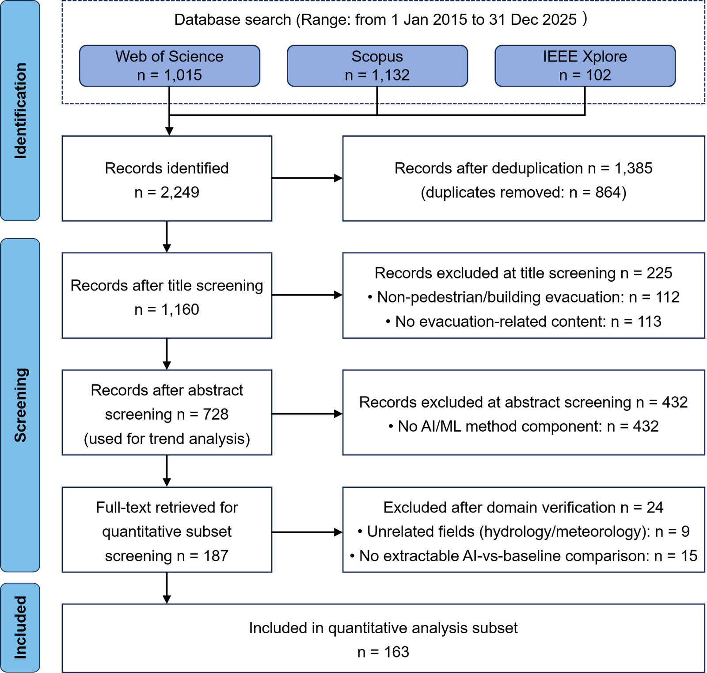
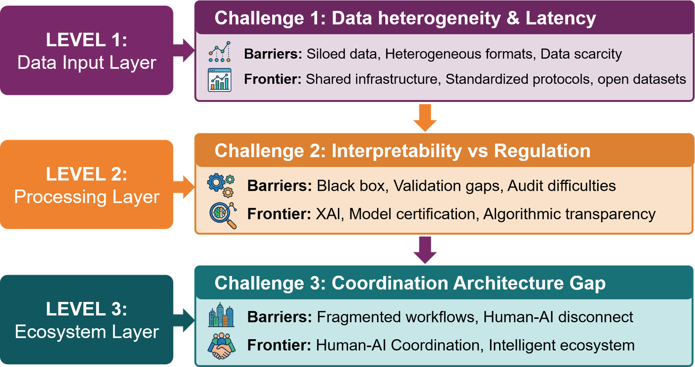
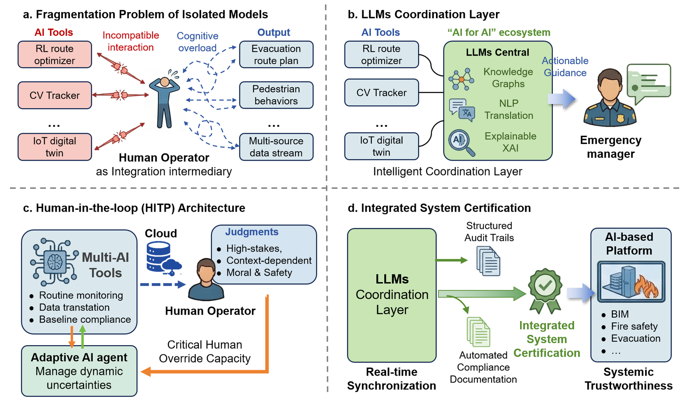

Research Centre for Smart City Resilience and Fire Safety, Department of Building Environment and Energy Engineering — The Hong Kong Polytechnic University
With the continuous increase in urban complexity and population density, safe evacuation during emergencies has become an important research topic in public safety management. This study supports smart safety and resilient cities by systematically reviewing AI applications in pedestrian evacuation. Following the PRISMA 2020 protocol, a systematic search of Web of Science, Scopus, and IEEE Xplore (2015–2025) yielded 728 articles for bibliometric analysis and 163 studies for quantitative benchmarking. Representative methods and trends in AI for evacuation modelling, behaviour prediction, and intelligent decision-making are identified.

Fig. 2. PRISMA 2020 flow diagram of the systematic search and screening process — from 728 identified records to 163 included studies after eligibility filtering.

Fig. 11. Structural challenges and future directions of AI application in evacuation safety — the three-layer bottleneck of data, model, and deployment, and how a trustworthy AI stack must be built from the ground up.

Fig. 14. The proposed "AI for AI" ecosystem orchestrated by LLMs and XAI — bridging algorithmic capability and engineering credibility toward a unified, Human-in-the-Loop framework for intelligent evacuation safety assessment.